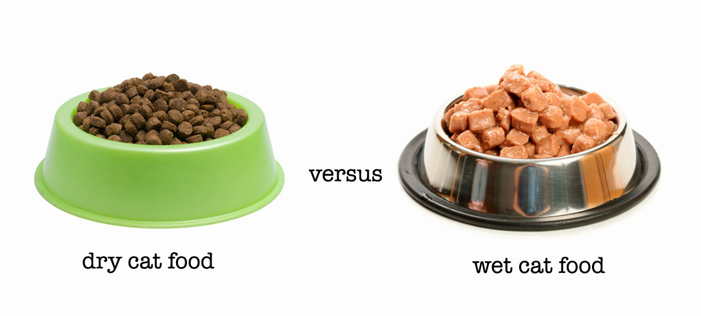
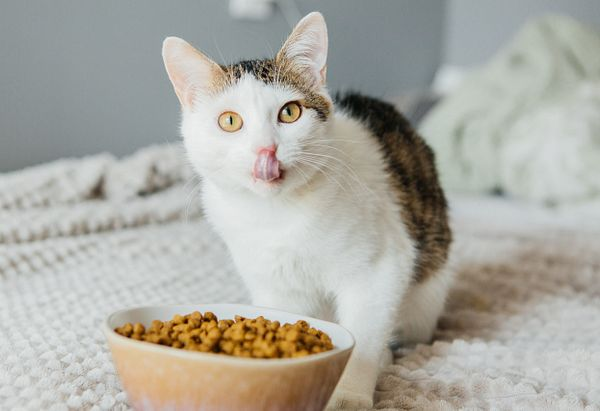
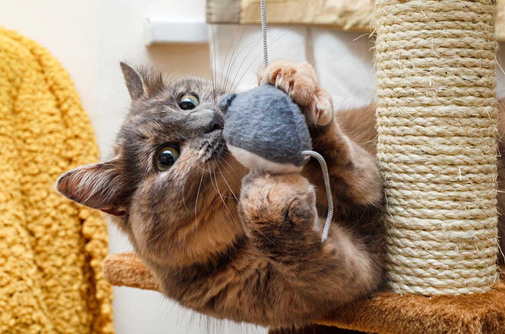

Adult Cat Care
Even as adults, cats still need care and attention. Cats that are aged 1 to 8 are considered adults while those that are 9 and up are considered to be seniors.
Food types:
Cats can be picky when it comes to food. It might take some time to find what they like. Cats can be given either dry food or wet food. Both of these offer a good source of nutrition and have its positives.
Dry Food vs Wet Food

Dry food
- Contains more carbs and less protein
- Great for dental health as it helps remove tartar
- Contain only 10% of water so it is important to provide water
- Cheaper compared to wet food
- Great for leaving out for cats to nibble on
Wet food
- Contains more protein and fat and less carbs
- Contains 70% of water
- More expensive
- Contains fewer calories compared to dry food
Feeding

2 to 3 times a day.
Make sure cats have access to a water source.
Try to avoid free feeding.
Avoid switching foods often as it can upset their stomachs. Slowly introduce new food with their regular food so they can get used to it.
Grooming
Cats clean themselves and are clean, but they might need help at times.
You can bath your cat if it is absolutely necessary. Long haired cats might experience trouble and might need a bath once a month or more often depending on the cat.
Short haired cats should be brushed once a week.
Long haired cats would have to be brushed more often as they might experience matted fur.
Nails should be trimmed every 2 to 3 weeks.
Brushing your cats teeth can be beneficial but can be impossible depending on cat.

Play Time & Enrichment
